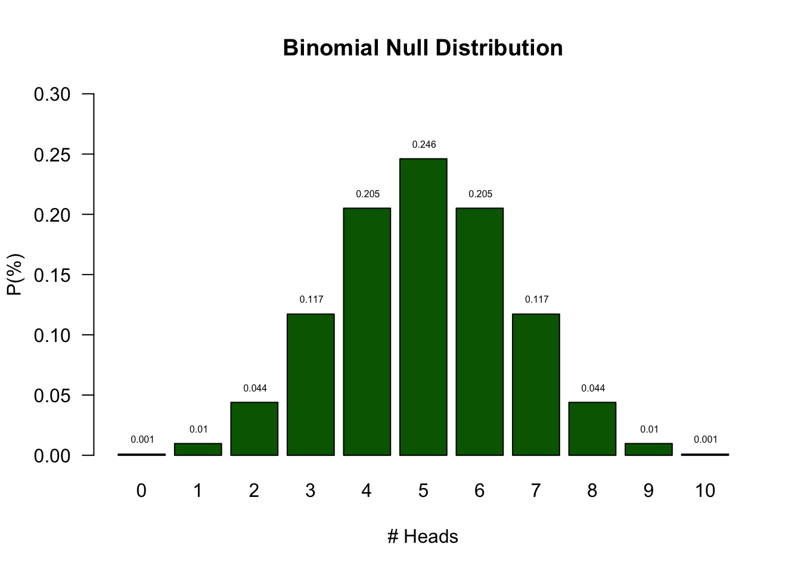
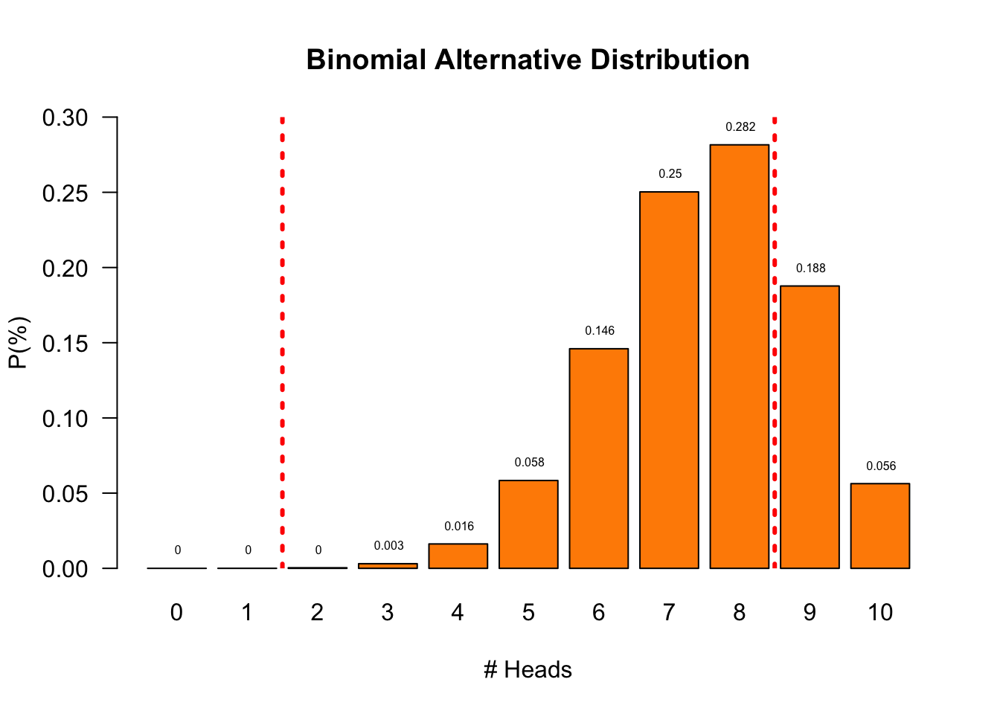

# install.packages("curl")
library("curl")
url = "https://docs.google.com/spreadsheets/d/e/2PACX-1vRcL5O7fPYtEfvqIQcRIFErAejbp8QozEW0Rx7m4p0xqA2-QU8CrMq35kVCD6q3CZH-CPhlJgXLZONc/pub?output=csv"
data <- read.csv(curl(url))Experiment
Test
https://maglit.me/proyi
Emperical Cycle
- Observation Patient is showing strange behavior
- Induction Can we diagnose an alien takeover?
- Deduction \(H_0\): P: \(\theta = 0.5\) → C: patient is human
- Deduction \(H_A\): P: \(\theta > 0.5\) → C: patient is alien
- Deduction \(H_A\): P: data \(\neq\) EV → C: patient is alien
- Testing Choose \(\alpha\) and Power
- Evaluation Make a decision
Null Distribution
Let’s analyse the null distribution of the results.
Distributions
What is the difference between
- Population distribution
- Sample distribution
- Sampling distribution
Binomial distribution
\[P(k \text{ success out of } n \text{ trials} \mid \text{probability } p) = {n\choose k}p^k(1-p)^{n-k}\] where \[ {n\choose k} = \frac{n!}{k!(n-k)!} \]
With values:
n <- 10 # Sample size
k <- 0:10 # Discrete probability space (numbers 0, 1, ..., 9, 10)
p <- .5 # Probability of headProbabilities

Testing
I had 7 items correct. Can we conclude I am no longer human?
- As you can see from the distribution of human scores, we cannot conclude that by definition.
- What we can do is indicate how rare 7 is in a human population.
Testing
- Based on the null distribution we can see that the expected value (EV) is 5
- We can now define the \(H_0\) hypothesis: \(H_0: EV = 5\)
- What is the alternative hypothesis?
- The alternative hypothesis describes a situation where the patient is alien
- We could say that the alternative hypothesis is not 5
- \(H_A: EV \ne 5\)
- We could also formulate our \(H_0\) and \(H_A\) more abstract:
- \(H_0:\) the patient is human
- \(H_A:\) the patient is alien
- What criterion should we use to conclude that one would be alien?
- In the social sciences this \(\alpha\) criteria is often 5%.
- I scored 7 items correct. That is more frequent than 5%.
- Therefore, we conclude that our patient is probably human but we can never be sure.
- I could still be part of the alien population.
Null Distribution
Observations outside the dashed lines are significant for \(\alpha = 0.05\)
Alternative Distribution
But we have no clue what this distribution could look like.
For now let’s assume the probability of answering an item correctly is .75

\(H_0\) and \(H_A\) Distribution